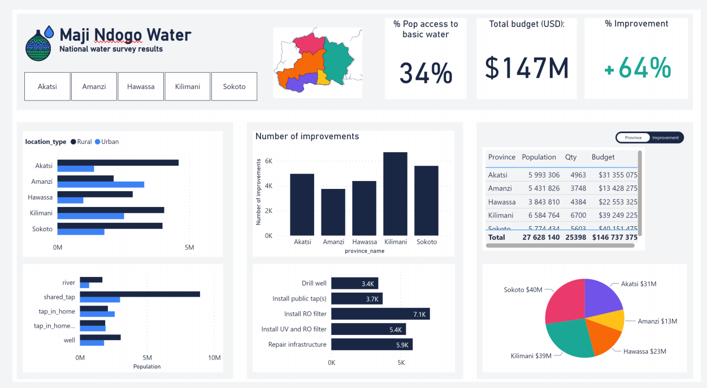
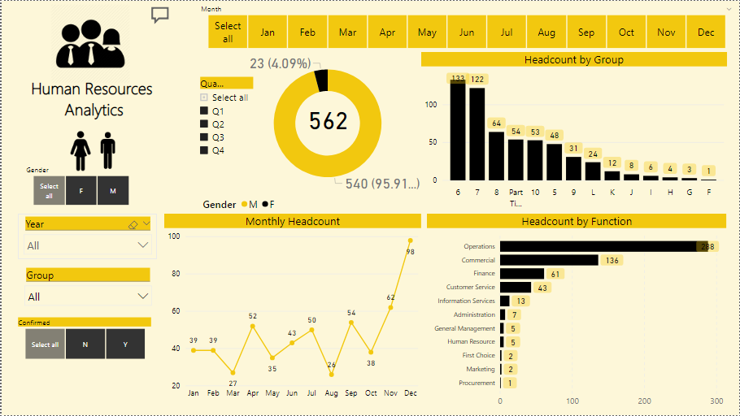
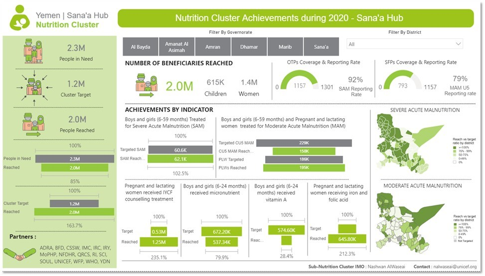

Portfolio
Dashboards
Power BI Dashboards and Data Visualizations
Sales Performance Dashboard
This dashboard provides an in-depth analysis of sales performance across various regions and product categories, helping stakeholders identify growth opportunities and optimize sales strategies.

Water Quality and Infrastructure Analysis
This project focuses on analyzing water quality data, infrastructure improvements, and employee performance for water sources in various locations. The project uses SQL to join and filter data across multiple tables, identify problematic sources, and track project progress.
Human Resources Analysis Dashboard
This dashboard provides comprehensive HR analytics, tracking company employee activities and behaviours.
Operational Efficiency Dashboard
Focused on operational KPIs, this dashboard highlights bottlenecks and inefficiencies, driving informed decision-making to enhance productivity.
SQL Projects
Exploratory Data Analysis and Data Queries
- Sales Data Analysis with SQL
- Customer Insights with Complex Queries
- Financial Reporting SQL Queries
- Supply Chain Data Analysis
- Supply Chain Data Analysis part 2
This project involves advanced SQL queries to analyze sales data, uncovering trends and patterns to optimize sales strategies and improve forecasting accuracy.
Leveraging complex SQL queries, this project extracts valuable customer insights, enhancing customer segmentation and targeted marketing initiatives.
This project demonstrates the creation of dynamic financial reports using SQL, facilitating comprehensive financial analysis and strategic decision-making.
Using SQL to analyze supply chain data, this project identifies inefficiencies and opportunities for cost reduction and process optimization.
Using SQL to analyze supply chain data, this project identifies inefficiencies and opportunities for cost reduction and process optimization.